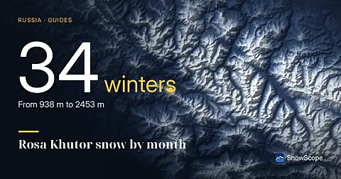
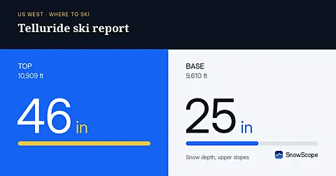
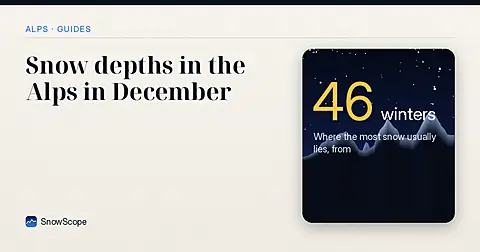
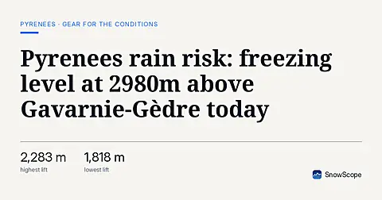
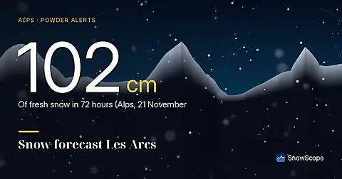
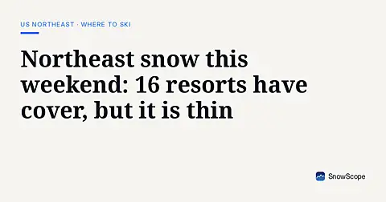
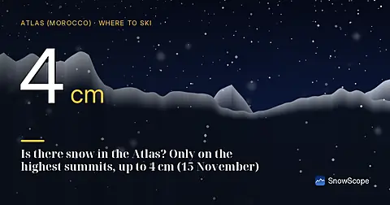
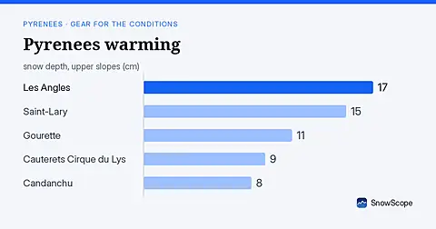
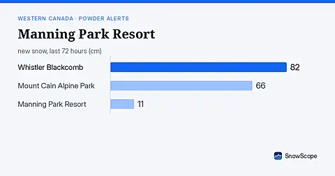
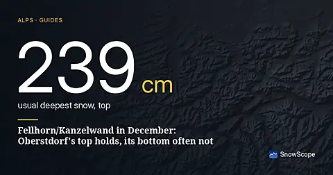

Snow reports · Where to ski
Daily snow reports for skiers: where the snow is, what is coming and where to ski, from the SnowScope snow map and measuring stations. Every number comes from that day's data.

Snow on the upper slopes today: Kiroro 119 cm, Sapporo Kokusai 103 cm, Asahidake 61 cm, Niseko 31 cm, Furano 29 cm, Rusutsu 16 cm, and only light snow in the next 8 days.

A storm crosses central Japan on 28 and 29 November: rain on Saturday, then snow. Hakuba Happo-one gets about 62 cm on the upper slopes, Tsugaike 61 cm, Myoko Suginohara 57 cm.

La Grave has the deepest snow in the French Alps at 158 cm upper slopes. Peak season runs weeks 15-17. Data from 27 November 2026.


Mt. Hood Meadows has 51 cm on upper slopes, well below the 73 cm average. Up to 66 cm new snow forecast by November 27 at Crystal Mountain.

Mt Baker sits at 28 cm on upper slopes, right where November typically sees snow at this height. Fresh powder is arriving this week, especially Thursday.

Rosa Khutor above Krasnaya Polyana: usual snow by month at the base, mid-mountain and top over 34 winters, the December gamble and the trend.

Finnish Lapland against the Swedish mountains: usual snow by month at eight resorts over 46 winters, who is losing snow and where it lies now.

How snow depth changes month by month at three top Dolomites resorts across 46 past winters, from base to summit.

Telluride has 51 in (130 cm) on upper slopes today. Brian Head Resort leads the US West with 57 in (144 cm), but Telluride's recent gains matter more for skiers planning the week ahead.

Prà Alpesina will see 57 cm of new snow by 26 November. Forecast data from 23 November shows heaviest falls on 25 November as freezing level rises.

La Pierre Saint-Martin snow forecast: up to 42 cm expected by 26 November (Pyrenees). At Astun, the freezing level reaches 1,960 m to 3,170 m on 24 …

Alpe d'Huez got 106 cm of fresh snow in 72 hours by 23 November. More powder coming, but watch for rain mid-week.

Twelve famous Alpine resorts ranked by their usual December snow depth at mid-mountain and the top, from 46 past winters, with the poor-December floor for each and the weeks that never fail.

Rain threatens upper slopes at Saddleback Mountain where 20 cm sits at 1,218 m. Freezing level rises to 3,760 m today, 22 November.

Whistler Blackcomb leads Western Canada with 153 cm on upper slopes. Snow covers 398,620 km² across 52 of 57 resorts on 22 November.

Whistler Blackcomb will receive 101 cm of new snow by November 25, far exceeding early-season norms. Mount Cain Alpine Park leads the region with 132 cm forecast.

Wildcat Mountain forecast to gain 56 cm over 14 days. Week one (23–29 Nov) brings 29 cm, with 22 cm falling on 27 November. Data from 22 November.

Mixed rain and snow at Hurricane Ridge through 25 November. Up to 24 in (61 cm) forecast near the top; rain falls below 4,528 ft (1,380 m). Data from 22 November.

Jackson Hole received 11 in (28 cm) of fresh snow in 72 hours. SnowScope shows 186 resorts with snow across the US West on 22 November.

Mount Washington Alpine Resort forecast to receive 359 cm of new snow in the next 14 days, with the heaviest falls in week one. Data from 22 November 2026.

Cauterets Cirque du Lys leads the Pyrenees with 24 cm at the top on 22 November. Heavy snow forecast for 25 November will push coverage from 44 to 51 resorts.

La Grave has 171 cm on upper slopes today, which is 68% of normal for late November. The Alps saw sharp gains this weekend.

The 0 °C level rises to 3200 m on Tuesday, bringing rain to mid-mountain slopes. Snow line stays above base at most resorts until Wednesday.

The Alps will collect up to 95 cm of new snow in the next 14 days, with 63% arriving in the first week. Best conditions above 1500 m from November 23. Data from November 22.

By 25 November, 64 cm of new snow forecast at Jungfraujoch Snow Fun Park. Data from 22 November.

Port del Comte sits 1744–2122 m above Solsona: natural snow depth peaks at 26–40 cm across the mountain, mostly in January and February. Data from 46 past winters.

The Mölltal glacier above Flattach: usual snow depth at the base, mid-mountain and the top from 46 past winters, from the first snow in September to the May skiing, and why the depth is a different world from the valley.

Tignes climbs from 1559 m to 3447 m across 46 past winters. Base: 117 cm peak. Mid-mountain: 216 cm. Glacier: 372 cm. Data from November 2026.

Hafjell above Lillehammer month by month: usual snow depth at the base, mid-mountain and the top from 46 past winters, the first snow, the deepest weeks and how the recent winters compare.

Kvitfjell's 46-winter snow record: when to expect deep snow for the speed races and spring skiing on Norway's Olympic downhill course.

Why Trysil's snow report shows two very different numbers: usual depth at the base, mid-mountain and the top of Trysilfjellet from 46 past winters, month by month, and what it means for the runs you will ski.

Where did the most fresh snow fall in the Alps? Fresh snow at Le Reposoir Chalet Neuf: 128 cm in the last 72 hours, including 88 cm in the last 24. …

Piau-Engaly sits at 1762 m with runs to 2527 m. Over 46 past winters, the usual peak depth is 88 cm at the base, 123 cm at mid-mountain and 159 cm at the top.

Gavarnie-Gèdre leads the Pyrenees with 26 cm on upper slopes on 22 November. Snow coverage has tripled in two days across the region.

46 winters of snow history at Alpe d'Huez show peak depths of 52 cm at base, 184 cm mid-mountain, 440 cm at top. Data from 1980–2026.

The 0 °C level reaches 12,861 ft (3,920 m) on 21 November in the US Northeast. Snow line peaks at 11,811 ft (3,600 m), above all resort tops.

Today's snow in the US Northeast, read, means thin early-season snow, icy mornings and soft afternoons and warm air that …

The forecast shows up to 199 cm across the US West in the next two weeks, with the heaviest snow arriving in week one. Data from 21 November 2026.

Mt Baker will see 22 cm of new snow by November 24, but the freezing level rises above 1,000 m on November 22, bringing rain-on-snow risk to lower slopes.

Telluride holds 50 in (127 cm) on upper slopes as of 21 November. Brian Head Resort leads the US West with 54 in (138 cm).

Kirkwood leads the US West with 109 cm on upper slopes as of 21 November. Early-season snow depth guide for skiers.

Two-week snow forecast for Western Canada: Mount Washington Alpine Resort forecast to receive 202 cm by 5 December, with the heaviest snow on 24 November.

Mount Washington Alpine Resort leads with 76 cm of new snow forecast by 24 November. Data from 21 November 2026.

150 cm on the upper slopes: that is why Whistler Blackcomb heads our list. Snow on the ground, snow from the last 72 hours, snow still to come: …

No snow on Atlas pistes on 21 November. High summits hold 1 cm at most. All three resorts are bare; the next storm may take weeks.

Rain above 2980m today at Gavarnie-Gèdre, but more snow arrives in four days. What to wear and bring for changing Pyrenees conditions.

0 °C level in the Alps next days: 1,330–3,210 m. Snow line peaks at 2,900 m on 22 November. Rain-on-snow risk at mid-mountain resorts Sunday 22 November.

Fourteen days of new snow across the Alps from 22 November to 5 December: Les Deux Alpes gets about 94 cm, with 73% arriving in week one. Data from 21 November.

Alps snow report, 21 November: Alpe d'Huez has 92 cm on upper slopes. Orelle leads the region with 136 cm. Fresh snow incoming by Tuesday.

La Pierre Saint-Martin receives 18 cm of new snow over the next days. Forecast for the Pyrenees from 21 November shows most snow above 1,900 m.

Les Arcs received 102 cm of fresh snow in the past 72 hours with 80 cm forecast by 24 November. SnowScope report for 21 November.

Rain falls on thin snow through Saturday as the freezing level stays high; Sunday's shift brings 32 resorts into snow cover and 20 cm forecast at Candanchu.

Les Contamines gained 145 cm of snow in 72 hours; upper slopes hold 115 cm. More powder is forecast for the weekend.

Les Arcs leads with 166 cm on upper slopes. Snow falls through Sunday. Best runs are high and north-facing. Data from 20 November.

Mixed rain and snow expected across the Pyrenees over the next three days, with the freezing level rising above resort summits by Sunday. New snow forecast between 13–24 cm at altitude.

Early-season snow in the Alps is running 38% above the 46-year average. La Plagne's mid-slopes hold 36 cm more than usual for this date, with heavy snow forecast through Sunday.

Fresh snow keeps falling at Tahoe resorts this weekend. Upper slopes at Palisades Tahoe Alpine Meadows hold 107 cm (42 in) today, 19 November.

Wildcat Mountain will receive the most snow in the Northeast over the next 14 days, with 29 cm forecast by our models as of November 19.

Pick a region, dates, budget and what matters; get every resort ranked with the likely snow at the start, the pass, hotel and food per person, chalets to book, and a game mode.

Whistler Blackcomb has 136 cm on upper slopes this weekend, but snow thins fast below 1500 m. Plan runs by elevation. Data from 19 November.

Alpine day passes from 36 EUR: nine resorts compared by price, kilometres of runs and the snow they usually hold, to find the best day of skiing for your money.

Telluride leads the US West with 125 cm on upper slopes on 19 November. Snow spread across the region to 782,430 km².

Six days of skiing from 191 EUR: we ranked ten cheap ski weeks in Europe by price, then checked 46 past winters to see where the snow is reliable.

New snow will reach the Pyrenees in two waves over 14 days, with 91 cm forecast at high altitude. The first week brings 49 percent of the total; week 2 stays steady. Data from 19 November.

New snow forecast for 15 Japanese ski resorts from 20 to 25 November: Hakuba and Tsugaike lead with about 90 to 97 cm at the top, Niseko about 35 cm.

Snow-covered area jumped from 560 to 1,710 km² between November 17 and 19. Piau-Engaly holds the deepest snow at 15 cm on upper slopes as of November 19.

Only 16 US Northeast resorts have skiable snow on 18 Nov. Thin cover and rain-crust risk mean careful gear choices. Forecasts for 19-21 Nov show no new snow.

Only 16 Northeast resorts hold snow on 18 November, with Tuckerman Ravine leading at 38 cm. No new snow forecast through Saturday.

China Peak will receive 33 in (83 cm) of snow by 21 November. Forecast issued 18 November for the US West.

Mount Washington Alpine Resort has 104 cm on upper slopes today. Whistler Blackcomb leads the region with 136 cm. Data from 18 November 2026.

Palisades Tahoe Alpine Meadows leads the US West with 30 in (75 cm) on upper slopes. Fresh snow and a strong forecast make it the weekend pick for 18 November.

Freezing level reaches 1,500 m at Banff Sunshine Village on November 19. Fresh snow fell across Western Canada in the last 72 hours, but rain threatens the new powder.

Crested Butte has 38 in (97 cm) on upper slopes on 18 November. Telluride leads the region with 50 in (126 cm). Snow covers 281,920 sq mi across the US West.

Western Canada forecast: 90 cm new snow at Mount Washington in the next two weeks, with 70 cm expected in late November and early December.

Fresh snow across the US West has built depths well above normal. At Palisades Tahoe Alpine Meadows, upper slopes hold 75 cm (measured 2026-11-18), compared to 10 cm typical for mid-November.

Zermatt has 47 cm on upper slopes today, 690% above the November median. The 0°C level stays above 2200 m through Friday.

The 0 °C level swings between 1,900 m and 3,670 m across the Pyrenees 19–21 November. Where does rain turn to snow at each resort?

The Pyrenees will gain up to 63 cm of new snow in the next 14 days, with 70% arriving before 25 November. Data from 18 November.

New snow forecast for the Alps through early December. Saint François Longchamp leads with 228 cm expected over 14 days, starting with 35 cm on Thursday.

Alps snow report 18 November: Orelle leads with 111 cm upper-slope snow. Weekend forecast brings 100+ cm new snow at top resorts.

No new snow expected at Jbel Hebri or Oukaïmeden in the next 14 days. The Atlas will see less than 1 cm total through early December, based on the forecast for 18 November.

Alpine snow forecast 18 November: 110 cm expected at Orelle, 105 cm at Les Grands Montets. Best snow arrives Thursday and Friday.


96 cm of new snow forecast for Les Arcs over the next three days, with today bringing the heaviest falls.

The two-week picture in the US West, 17 November to 30 November, drawn from the two forecasts that reach two weeks, ECMWF and GFS. Middle of the …

Whistler Blackcomb saw 76 cm of new snow in the last 72 hours, with Mount Cain Alpine Park also receiving 64 cm, as of November 16, 2026.

Despite 60 cm of fresh snow in 72 hours, Scandinavia's mid-November depths are well below average as of 16 November.

Riksgränsen dominates Scandinavia with 173 cm of snow depth measured on 16 November, holding far more mountain water than any rival resort in the region.

La Grave leads the Alps with 97 cm on upper slopes. Snow coverage is shrinking as early winter builds unevenly across the region on 15 November.

The Atlas holds just 20 km² of snow on 15 November, all on high summits up to 4 cm deep. No snow at ski resorts; none forecast through 18 November.

The snow has pulled back since 13 November, from 6,880 sq mi (17,820 km²) to 6,039 sq mi (15,640 km²) today; for 18 November our forecast gives …

Mount Washington Alpine Resort leads with 158 cm at the top on 15 November. Fresh snow at Whistler Blackcomb and Mount Cain Alpine Park also scores high for November skiing.

Pyrenees snow report 15 November: mixed rain and snow at Cauterets, 7–19 cm fell in 72 hours near the summit. More coming by 18 November.

At Big White on 15 November, the upper slopes hold 68 cm near the summit while the base remains bare; an extreme vertical gradient typical of early season.

79 cm new snow forecast for Les Grands Montets from 16–18 November, mostly above 2000 m elevation, based on forecast from 15 November.

Rain forecast as freezing level climbs to 4080 m; snow measured on 15 November is thin (under 20 cm) at all major Pyrenees resorts.

Tuckerman Ravine holds 24 cm on upper slopes. Early-season snow is thin; stay on groomed runs and check lifts before you go.

Les Deux Alpes: how much fresh snow fell? 38 cm in 72 hours (15 November). Where did the most fresh snow fall in the Alps? La Grave got 41 cm of new …

Manning Park Resort has 22 percent of normal snow on 2026-11-15, with best historical snow arriving in weeks 12-14, still months away.

Krvavec mid-mountain has 13 cm typical snow on 15 December in 46 winters, but bare ground in 11 of them. Day pass EUR 47.

Ski 157 km of mapped runs in Serre Chevalier where the top of the mountain has a 100 % chance of snow by mid-December.

Turracher Höhe has 23 cm at mid-mountain on a typical 15 December, but only 39% of winters reach 30 cm there in mid-December. Data from 13 November 2026.

Hochkar mid-mountain has 38 cm on a typical 15 December, and 63 % of winters had 30 cm or more in that week. Day tickets from EUR 32.90 on quiet dates.

Idre Fjäll's December snow odds improve sharply after mid-month. On 13 November, the typical mid-mountain depth on 15 December is 32 cm.

Ten European ski resorts ranked for December value, led by Les 2 Alpes with 75 cm of mid-mountain snow.

Boí Taüll starts at 2039 m and beats Baqueira Beret on day-pass price, though early December snow still takes some patience.

Sälen December skiing: 28 cm on a typical 15 December and 48 % of winters with 30 cm in mid-December, down from the 1980s; Trysil next door does better.

Orcières Merlette offers a high base at 1826 m and a 6-day pass from 227 EUR, making it a reliable choice for a December ski trip.

Is Alpe d'Huez worth it for December 2026? We check the snow odds, the starting price of 58.00 EUR, and compare it with Les 2 Alpes.

Slovenia's ski passes are the cheapest (Krvavec EUR 205 for 6 days), but natural December snow there is rare; Lachtal, the Hochkar and the Mölltal glacier do better.

Cauterets offers 25 km of runs for 46 EUR, but our snow history shows that the best chance for cover is the last week of December.

Lachtal costs EUR 62 a day and children under 7 ski free. Mid-mountain had 30 cm or more in 72 % of Decembers mid-month onwards. Snow depth on 13 November 2026.

Ski the 131 km of runs in the Forêt Blanche this December with a six-day pass for 298 EUR.

Ruka's 6-day pass costs EUR 265. Snow odds jump from 39% in early December to 85% by Christmas week. Plan mid-month or later.

Monterosa Ski day passes run from 40.00 to 71.00 EUR online. In December the snow is up high: 124 cm usual at 3030 m, 6 cm at 1207 m.

On 15 December at Fellhorn/Kanzelwand: 63 cm at 1965 m top, 30 cm at mid-mountain, only 10 cm at 918 m base. Plan accordingly.

Plan your December 2026 trip to Les Orres by matching weekly pass prices with our snow history of 46 past winters.

Hemavan's mid-mountain has 82 cm of snow on a typical 15 December. Every winter in 46 years had 30 cm or more in mid-December. Data from 13 November 2026.

Compare Grandvalira and Spanish resorts in December 2026 for snow depths, lift heights, and prices starting from 49.00 EUR.